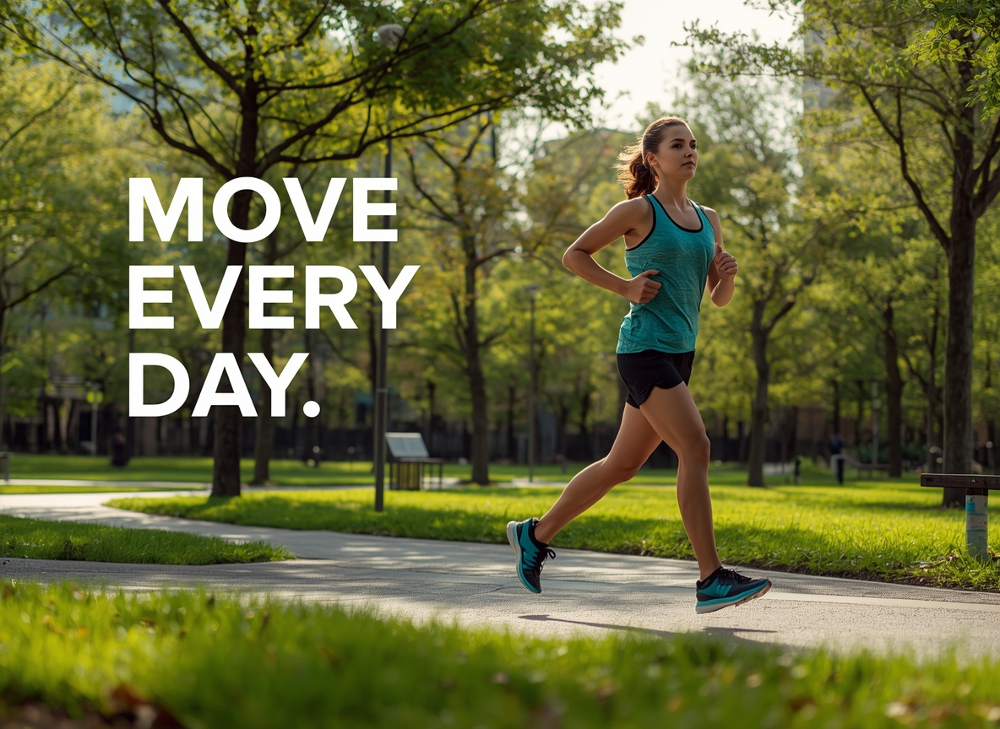

Move Every Day
Physical inactivity is one of the leading risk factors for preventable illness among students, who often spend long hours sitting in lectures or studying. A short daily walk or stretch break can measurably lower stress and improve concentration.
- Take a 10-minute walk between study sessions.
- Use stairs instead of lifts on campus.
- Join a free university sports club.